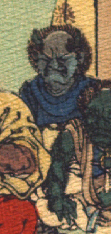

青い肌の鬼。額は禿げ上がり、2本の角を生やしている。しかめ面をしている。青い上着を着て、座っている。
出典：親書誌：U426_nichibunken_0113：Les Ogres d'Oyeyama／日付：2006／資源識別子：U426_nichibunken_0113_0004_0004
Copyright (c)2010- International Research Center for Japanese Studies, Kyoto, Japan. All rights reserved.